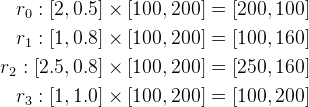
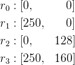
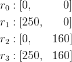
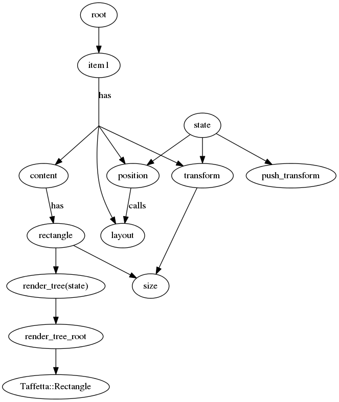
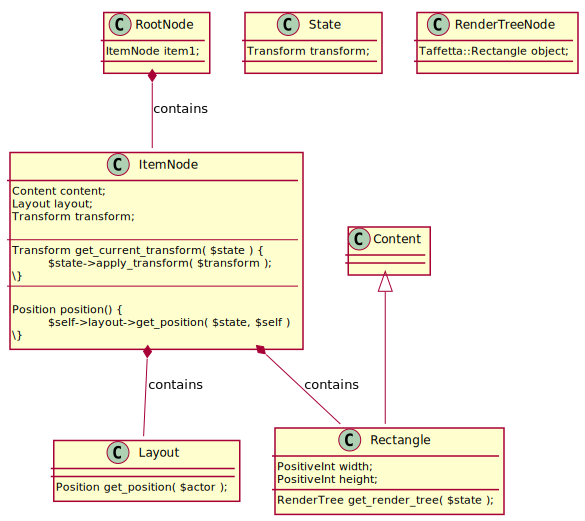

See Jacquard loom.
Render tree
Transformation order
Rect sizes

What is currently happening:
Placement

Matrices

>> r_2 = eye(4) * [ eye(3,4) ; 20 160 0 1 ] * diag( [2.5 0.8 1 1 ] )
r_2 =
2.5000 0 0 0
0 0.8000 0 0
0 0 1.0000 0
50.0000 128.0000 0 1.0000
What needs to happen:
Placement

Matrices
![\begin{aligned}
r_2 &=
\underbrace{
\begin{pmatrix}
2.5 & 0 & 0 & 0 \\
0 & 0.8 & 0 & 0 \\
0 & 0 & 1 & 0 \\
0 & 0 & 0 & 1 \\
\end{pmatrix}
}_{\text{\textbf{Affine}}}
%
\underbrace{
I
}_{\text{\textbf{All}}}
%
\underbrace{
\begin{pmatrix}
1 & 0 & 0 & 0 \\
0 & 1 & 0 & 0 \\
0 & 0 & 1 & 0 \\
0 & 160 & 0 & 1 \\
\end{pmatrix}
}_{\text{\textbf{Autofill(2,2)}}} \\
&=
\begin{pmatrix}
2.5000 & 0 & 0 & 0 \\
0 & 0.8000 & 0 & 0 \\
0 & 0 & 1.0000 & 0 \\
0 &160.0000 & 0 & 1.0000 \\
\end{pmatrix}
\\
\end{aligned}](./a3bc31389dfd3bc5cae0d40a0e27880d.png)
>> r_2 = diag( [2.5 0.8 1 1 ] ) * eye(4) * [ eye(3,4) ; 0 160 0 1 ]
r_2 =
2.5000 0 0 0
0 0.8000 0 0
0 0 1.0000 0
0 160.0000 0 1.0000
UML

